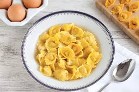

Cappelletti

The cappelletti is a stuffed pasta of peculiar shape, resembling a "little
hat". The cappelletti are also filled inside with many options, such as beef,
chicken, cheese, and nutmegs (although the latter is quite controversional).
The cappelletti has its origins in Romagna, a region in Italy, and its name
comes from the term caplèt. The term is the name for stuffed pasta in Romagna dialect,
with a reference to the pasta's shape as a galonza (a small hat with a brm
and a large dome that the country folk used to wear).
Ingredients
- 4 3/4 cups type "00" or all purpose
flour
- 5 oz. Parmigiano Reggiano cheese, grated
- 2 oz. mortadella
- 2 oz. minced veal
- 2 oz. minced beef
- 2 oz. minced pork
- 1/2 stick butter
- 6 large eggs
- High-quality meat broth
- Nutmeg
- Salt
Step-by-step
-
Brown the minced meat in a pan with butter for a few minutes. Transfer
it to a bowl. Combine the chopped mortadella, Parmigiano, a pinch of Salt
and nutmeg.
-
Pour the flour onto a pastry board with a pinch of salt. Crack the
eggs in the middle and knead them with a fork, then your hands, for a
firm and smooth dough. Cover and let rest for 30 minutes. With a rolling
pin, roll out the dough into a thin sheet. Then cut out 1" squares using
a ravioli cutter.
-
Place a small walnut-sized portion of filling in the center of each
round. Fold each one into a triangle and seal the edges, then, bring the
opposite ends together. Put the cappelletti on a cloth as you assemble them.
Cook in a boiling broth and serve with a sprinkling of Parmigiano Reggiano.
-
Enjoy your cappelletti!